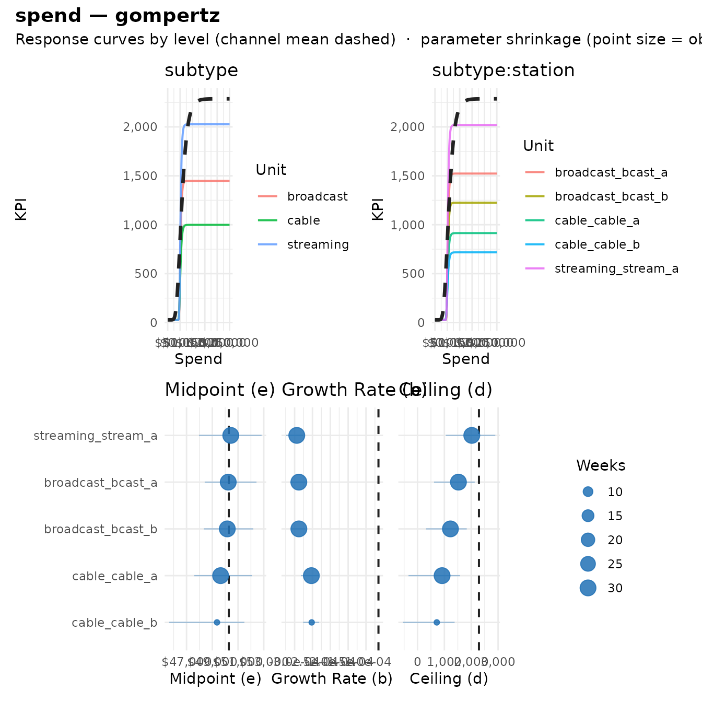
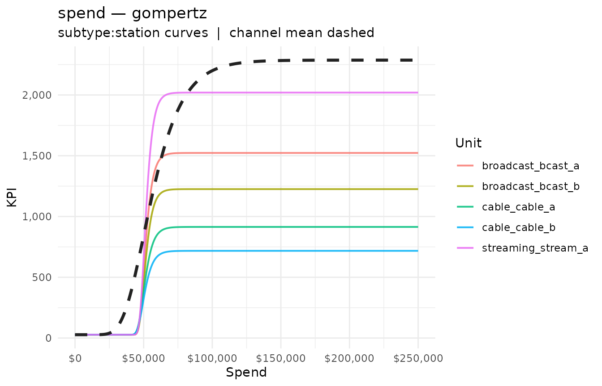
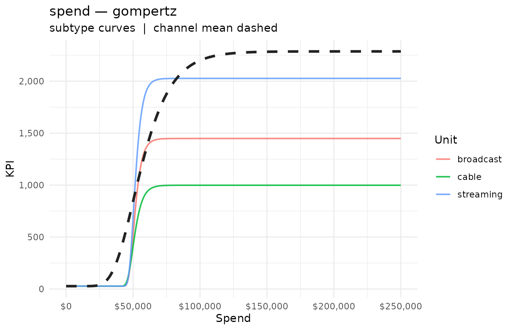
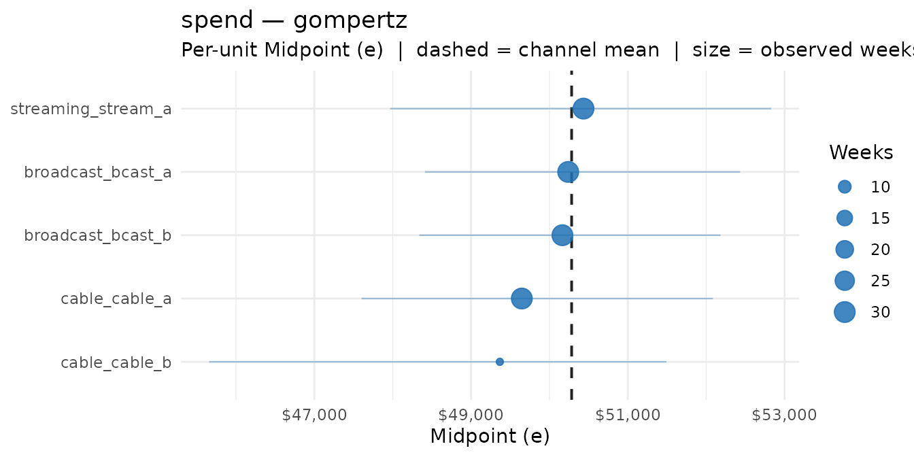
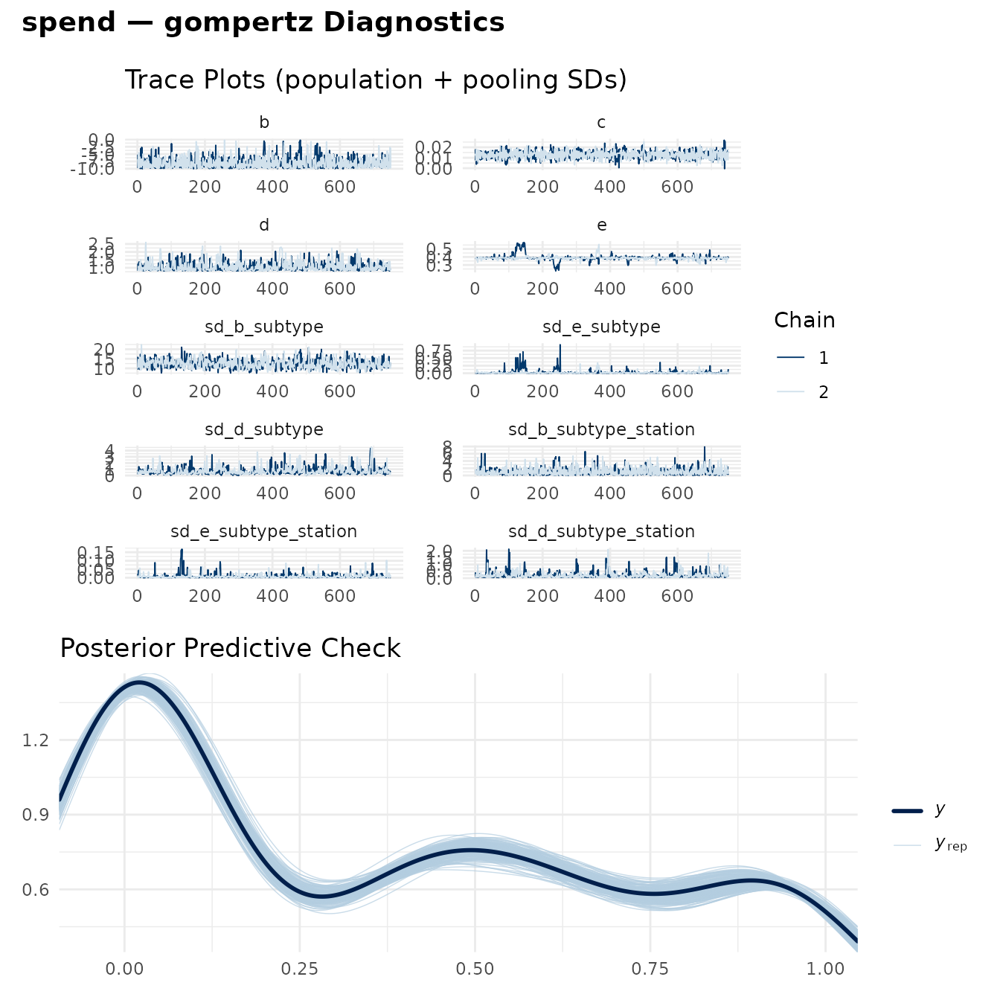
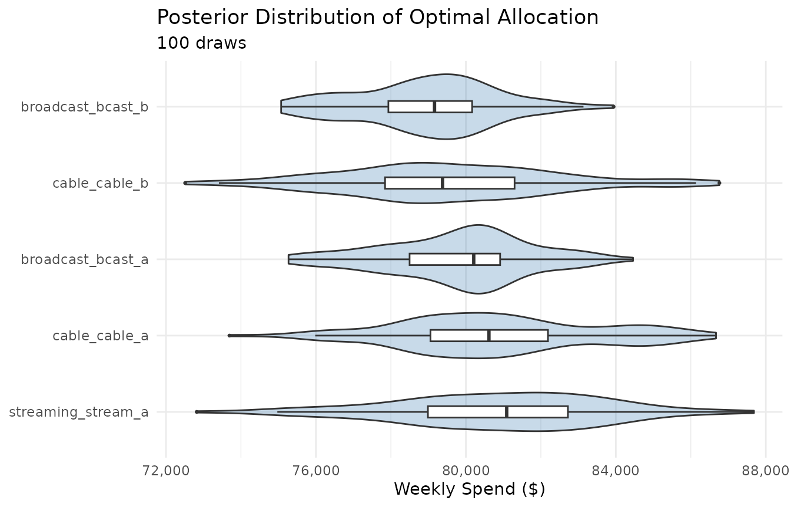

Hierarchical Response Curves
hierarchical_curves.RmdMedia channels are rarely homogeneous. TV spend spans broadcast, cable, and streaming; each partner or station within those has its own reach and response dynamics. Fitting one curve to the whole channel discards that structure, while fitting a separate curve to every sub-unit overfits the sparse ones.
fit_response_hier() fits a single hierarchical
model for one channel where the curve parameters are
partially pooled across sub-channel groupings. Sparse units
borrow strength from their group; well-observed units stay close to
their own data. The degree of shrinkage is automatic and
data-driven.
This vignette fits a two-level hierarchy (subtype → station), inspects the per-level curves, visualizes the pooling, and optimizes a budget at a chosen level of the hierarchy.
Simulated data
We simulate a TV channel with three subtypes and several stations
each. Curve shape (growth b, midpoint
e) is similar across stations; scale (ceiling
d) varies with station size. One station —
cable_b — has only a handful of active weeks, so we can
watch partial pooling pull its estimate toward the cable group mean.
set.seed(2026)
gompertz <- function(x, d, e, b = -3e-4) d * exp(-exp(b * (x - e)))
# subtype -> station -> (ceiling d, n weeks)
spec <- list(
broadcast = list(bcast_a = c(d = 1500, n = 30), bcast_b = c(d = 1200, n = 30)),
cable = list(cable_a = c(d = 900, n = 30), cable_b = c(d = 700, n = 6)),
streaming = list(stream_a = c(d = 2000, n = 30))
)
make_station <- function(subtype, station, d, n) {
spend <- runif(n, 2e3, 1.3e5)
mu <- gompertz(spend, d = d, e = 5e4)
data.frame(
week = seq.Date(as.Date("2024-01-01"), by = "week", length.out = n),
subtype = subtype,
station = station,
spend = spend,
aa_opps = pmax(rnorm(n, mu, 0.05 * d), 0)
)
}
tv <- do.call(rbind, unlist(lapply(names(spec), function(st) {
lapply(names(spec[[st]]), function(stn) {
p <- spec[[st]][[stn]]
make_station(st, stn, d = p[["d"]], n = p[["n"]])
})
}), recursive = FALSE))
tv |> count(subtype, station)
#> subtype station n
#> 1 broadcast bcast_a 30
#> 2 broadcast bcast_b 30
#> 3 cable cable_a 30
#> 4 cable cable_b 6
#> 5 streaming stream_a 30Fitting the hierarchical model
The call mirrors fit_response(), with one new argument:
group, a vector of grouping columns ordered outermost →
innermost. Here c("subtype", "station") fits the nested
structure (1 | subtype) + (1 | subtype:station) on the
pooled parameters.
By default the shape parameters (b, e) and
the scale parameter (d) are pooled, while the floor
(c) stays at the channel level. (Iterations are kept modest
here to keep the vignette quick.)
fit_tv <- fit_response_hier(
data = tv,
spend = "spend",
kpi = "aa_opps",
date = "week",
group = c("subtype", "station"),
type = "gompertz",
chains = 2,
iter = 1500,
warmup = 750
)Printing the fit shows the hierarchy, the channel-level mean curve, and a per-station table:
fit_tv
#> -- Hierarchical Response Curve: gompertz -------------------------------------
#> Channel: spend | KPI: aa_opps
#> -- Hierarchy -----------------------------------------------------------------
#> Level 1: subtype 3 unit(s)
#> Level 2: station 5 unit(s)
#> Pooled parameters: b, e, d
#> -- Channel-Level Parameters (mean curve) -------------------------------------
#> b (growth rate): -6.51e-05
#> c (floor): 28
#> d (ceiling): 2,287
#> e (midpoint): $50,283
#> -- Sub-Channel Units (5) -----------------------------------------------------
#> unit wkly spend KPI ceiling (d)
#> broadcast_bcast_a $46,060 81 1,523
#> broadcast_bcast_b $57,739 1,098 1,225
#> cable_cable_a $61,965 876 914
#> cable_cable_b $57,117 626 718
#> streaming_stream_a $76,089 2,019 2,020
#> -- Bayes R2 ------------------------------------------------------------------
#> R2: 0.9945 (95% CI: [0.9939, 0.9948])
#>
#> Use summary(x) for brms diagnostics; mrm_summary_hier(x) for the full table.Per-level summaries
mrm_summary_hier() returns one row per unit at every
level of the hierarchy, plus a channel-level row. The columns match the
single-fit mrm_summary(), with added id and
level keys.
mrm_summary_hier(fit_tv) |>
select(id, level, weekly_spend, kpi_at_current, d, e) |>
arrange(level, id)
#> # A tibble: 9 × 6
#> id level weekly_spend kpi_at_current d e
#> <chr> <chr> <dbl> <dbl> <dbl> <dbl>
#> 1 (channel) channel 60304. 1370. 2287. 50283.
#> 2 broadcast subtype 51899. 795. 1448. 50205.
#> 3 cable subtype 61157. 946. 999. 49711.
#> 4 streaming subtype 76089. 2026. 2027. 50369.
#> 5 broadcast_bcast_a subtype:station 46060. 80.9 1523. 50239.
#> 6 broadcast_bcast_b subtype:station 57739. 1098. 1225. 50165.
#> 7 cable_cable_a subtype:station 61965. 876. 914. 49647.
#> 8 cable_cable_b subtype:station 57117. 626. 718. 49367.
#> 9 streaming_stream_a subtype:station 76089. 2019. 2020. 50434.Notice the ceilings (d) track the sizes we simulated,
and the sparse station cable_b is pulled toward its cable
peers rather than chasing its own noisy data.
Visualizing the hierarchy
mrm_plot_hier() produces a dashboard
(like mrm_plot() for single fits): a response-curve panel
for each level of the hierarchy, plus a shrinkage panel for each of the
shape/scale parameters (e, b,
d).
mrm_plot_hier(fit_tv)
The individual panels are also exported as standalone functions when
you want just one. mrm_plot_hier_response() shows one curve
per unit at a level, overlaid with the channel mean (dashed); it
defaults to the innermost level:
mrm_plot_hier_response(fit_tv)
mrm_plot_hier_response(fit_tv, level = "subtype")
mrm_plot_hier_shrinkage() makes partial pooling
explicit. Each unit’s parameter estimate is shown with its credible
interval; point size reflects the number of observed weeks, and the
dashed line marks the channel mean. Sparse units have wider intervals
and sit closer to the mean.
mrm_plot_hier_shrinkage(fit_tv, param = "e")
Diagnostics
mrm_plot_hier(type = "diagnostics") (or
mrm_plot_hier_diagnostics()) shows trace plots for the
channel-level parameters and the partial-pooling standard deviations,
plus a posterior predictive check — the hierarchical analogue of
mrm_plot(fit, type = "diagnostics").
mrm_plot_hier(fit_tv, type = "diagnostics")
Optimizing at any level
as_mrmfit_list() expands the hierarchical fit into a
named list of single-curve models — one per unit at a chosen level —
that plugs directly into opt_mix(). This is how you
optimize “at any level of the hierarchy.”
Optimize across individual stations (the innermost level):
station_models <- as_mrmfit_list(fit_tv, level = "subtype:station")
opt_stations <- opt_mix(station_models, budget = 400000)
opt_table(opt_stations)
#> # A tibble: 6 × 18
#> channel current_spend optimal_spend spend_delta spend_delta_pct current_kpi
#> <chr> <dbl> <dbl> <dbl> <dbl> <dbl>
#> 1 streaming… 76089. 80548. 4459. 0.0586 2019.
#> 2 broadcast… 46060. 79896. 33836. 0.735 80.9
#> 3 broadcast… 57739. 79059. 21321. 0.369 1098.
#> 4 cable_cab… 61965. 80839. 18874. 0.305 876.
#> 5 cable_cab… 57117. 79659. 22542. 0.395 626.
#> 6 TOTAL 298969. 400000 101031. 0.338 4699.
#> # ℹ 12 more variables: optimal_kpi <dbl>, kpi_delta <dbl>, kpi_delta_pct <dbl>,
#> # current_cp <dbl>, optimal_cp <dbl>, cp_delta <dbl>,
#> # current_spend_share <dbl>, optimal_spend_share <dbl>,
#> # spend_share_shift <dbl>, current_kpi_share <dbl>, optimal_kpi_share <dbl>,
#> # kpi_share_shift <dbl>Or step up a level and optimize across subtypes:
subtype_models <- as_mrmfit_list(fit_tv, level = "subtype")
opt_subtypes <- opt_mix(subtype_models, budget = 400000)
opt_table(opt_subtypes)
#> # A tibble: 4 × 18
#> channel current_spend optimal_spend spend_delta spend_delta_pct current_kpi
#> <chr> <dbl> <dbl> <dbl> <dbl> <dbl>
#> 1 streaming 76089. 130607. 54518. 0.716 2026.
#> 2 broadcast 51899. 130379. 78480. 1.51 795.
#> 3 cable 61157. 139014. 77857. 1.27 946.
#> 4 TOTAL 189145. 400000 210855. 1.11 3766.
#> # ℹ 12 more variables: optimal_kpi <dbl>, kpi_delta <dbl>, kpi_delta_pct <dbl>,
#> # current_cp <dbl>, optimal_cp <dbl>, cp_delta <dbl>,
#> # current_spend_share <dbl>, optimal_spend_share <dbl>,
#> # spend_share_shift <dbl>, current_kpi_share <dbl>, optimal_kpi_share <dbl>,
#> # kpi_share_shift <dbl>Because each unit view carries its own posterior draws, the posterior optimization path works too and propagates pooling-aware uncertainty into the allocation:
opt_post <- opt_mix(station_models, method = "posterior",
budget = 400000, n_draws = 100, seed = 1)
plot(opt_post, type = "posterior")
Saturating (log-based) channels
The log-based forms (log_logistic, weibull,
reflected_weibull) are supported too. For these the
midpoint enters as log(e), which requires
e > 0; group-level deviations could otherwise drive it
negative. The fit handles this internally by reparameterizing the
midpoint on the log scale, then reporting e in the usual
spend units — no change to how you call it:
fit_tv_ll <- fit_response_hier(
data = tv,
spend = "spend",
kpi = "aa_opps",
date = "week",
group = c("subtype", "station"),
type = "log_logistic"
)How pooling works
- Fixed effects are the channel-level mean curve.
- Random effects at each level (subtype, then subtype:station) are drawn from the level above, so a station’s curve is the channel mean plus its subtype deviation plus its own deviation.
-
Shrinkage is automatic: units with more
observations are pulled less toward the group mean; sparse units (like
cable_b) are pulled more and carry wider credible intervals. -
Shape pools, scale floats: pooling concentrates on
the shape parameters (
b,e) while the ceiling (d) varies more freely to reflect genuine size differences across units.
See ?fit_response_hier for the full argument list,
including pool (which parameters get group effects),
group_sd_prior, and min_obs. ```